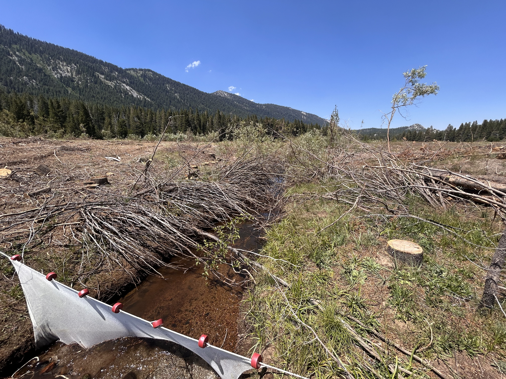
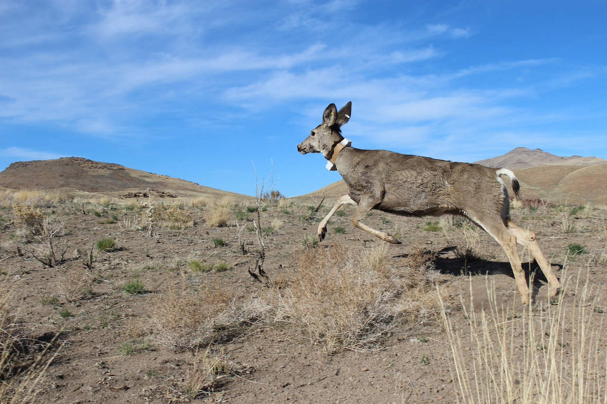
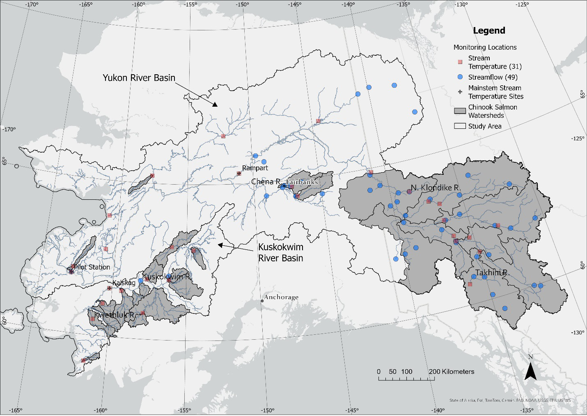

Current FFEL Research Projects
Riparian Thinning Effects on Trophic Pathways That Support Aquatic Consumers in a Sierra Nevada Headwater Stream
Project Personnel
Dr. Jeff
Falke (PI)
Brooke Radow (MS Student;
NRES)
Tanner Morgan (Undergraduate Researcher;
NRES)
Funding: University of Nevada, Reno; Nevada Department of Wildlife

Across montane landscapes of the western U.S., decades of fire suppression and conifer encroachment have degraded meadow habitats and elevated wildfire risk, prompting large-scale forest restoration efforts whose consequences for adjacent streams remain poorly understood. At the the University of Nevada, Reno Whittell Forest and Wildlife Research Area in the eastern Sierra Nevada, we are investigating how large-scale riparian conifer removal, implemented to restore montane meadow habitat and reduce wildfire risk, alters the structure and function of a headwater stream food web. Using a Before-After-Control-Impact (BACI) design along Franktown Creek, we are tracking how the loss of streamside canopy reshapes light and temperature regimes and cascades through the food web, from periphyton and aquatic and terrestrial invertebrates to non-native Brook Trout (Salvelinus fontinalis), the system’s dominant fish consumer. We pair this empirical monitoring with simulation modeling coupled with fish bioenergetics to predict food web responses under alternative canopy, climate, and fish-occurrence scenarios. Together, these approaches link terrestrial forest management to aquatic ecosystem function and provide actionable science to help managers integrate forest restoration and wildfire risk reduction with the conservation of sensitive mountain streams.
Integrated Monitoring Plan Development for Native and Non-Native Fishes at Ash Meadows National Wildlife Refuge, Nevada
Project Personnel
Dr. Jeff
Falke (PI)
Dr. Dara Yiu (Post-doctoral
Researcher)
Funding: U.S. Fish and Wildlife Service, Desert National Wildlife Refuge Complex

Monitoring for population status and trends is a critical component to successful conservation and management of freshwater fishes. However, integrated status and trend monitoring efforts for native and invasive fishes that combine traditional active and passive capture methods with single- and multiple-species eDNA assays have yet to be developed for desert ecosystems. A modern, formalized sampling design, analysis, and reporting framework is needed to institutionalize science-based management and advance our understanding of native and nonnative fishes at Ash Meadows National Wildlife Refuge (AMNWR), Nevada. The project is a collaboration of researchers across multiple agencies and includes the U.S. Geological Survey, University of Nevada, Reno, Washington State University, U.S. Fish and Wildlife Service Desert Refuge Complex, and the Nevada Department of Wildlife. We will develop a peer reviewed integrated status and trend monitoring plan for native and non-native aquatic taxa at AMNWR that incorporates eDNA assays, traditional fish sampling, and structured decision making.
EcoHyDrA: An Eco-Hydrologic Assessment of Long-Term Drought on Western U.S. Landscapes
Project Personnel
Dr. Jeff
Falke (PI)
Funding: U.S. Geological Survey, Ecosystems Mission Area

Climate variability and persistent drought have focused attention on declining water availability across western U.S. riverscapes. Although meteorological drought indicators are well established, relationships between climate and ecosystem responses are less recognized and need to reflect multiple drought “flavors” and complex mediating processes. A better understanding of drought sensitivity in an ecological context (i.e., how ecosystems change in response to water deficits) will provide essential information for adaptation planning and management. We are developing a prototype watershed drought vulnerability assessment using a combination of remotely-sensed observations and results from recent modeling efforts by compiling spatially-explicit time series representing meteorological indicators, hydrologic responses (streamflow and permanence, soil moisture, spring zones), soil moisture, and vegetation productivity (upland, riparian) and summarized interannual variability through time. We are assessing sensitivity by examining variability within and among components, testing spatial patterns across landform classifications, and evaluating temporal trends. Our next steps include expanding to additional watersheds that represent gradients in ecological condition and landscape intactness, developing integrated indicators through data reduction, and constructing relational models, probabilistic networks, and tools for adaptation planning. Ultimately, we hope to provide an understanding of drought sensitivity that incorporates social and ecological elements to inform broad- to local-scale decisions and facilitate identification of watersheds and landscape positions most sensitive to drought. The project is a collaboration of researchers across USGS including the Cooperative Research Units, Northern Rocky Mountain Science Center, and Forest and Rangeland Ecosystem Science Center.
Mapping Ungulate Migrations in Nevada
Project Personnel
Dr. Brian
Folt (co-PI)
Dr. Jeff Falke (co-PI)
Dr. Nathan Jackson (Post-doctoral Researcher)
Funding: U.S. Geological Survey, Ecosystems Mission Area; Nevada Department of Wildlife

Large-scale land-use changes threaten to fragment habitats and disrupt seasonal migration corridors of large ungulates that are important to population growth and persistence. By identifying important habitats and migration corridors for ungulate populations in Nevada, land-use planning might accommodate requirements for ungulates in addition to other multiple uses on landscapes. To this end, we are participating in a large-scale research project that aims to identify important habitats and migration corridors for ungulate populations across Nevada. We are collaborating with Nevada Department of Wildlife to analyze existing GPS-collar data describing seasonal movement patterns of Mule Deer, Pronghorn, and Elk and provide maps estimating seasonal ranges and migration corridors for different populations across the state. Land-use planning decisions across Nevada could benefit from the resulting spatial information describing key habitats and migration corridors for ungulates in the state, potentially to be used as exclusion criteria. Additionally, we will produce a synthetic analysis of all ungulate migration corridors in the state and work with the state to develop a decision-support analysis at a large scale, given their needs.
Spawning and early life history dynamics and non-native predation effects of Wall Canyon Sucker (Catostomus murivallis)
Project Personnel
Dr. Jeff
Falke (PI)
Eddy Kapp (MS Student;
NRES)
Funding: Nevada Department of Wildlife

Formally described in 2025, the Wall Canyon Sucker (Catostomus murivallis) is a highly endemic fish species native to Nevada. Its known distribution is limited to roughly a 24-kilometer section of stream in Washoe County, Nevada. The watershed is managed both for sport fishing opportunities and for the conservation of the Wall Canyon Sucker. This study aims to characterize the spawning behavior and early life history dynamics of the species. Specifically, we will identify environmental cues associated with spawning and determine the preferred habitat of larval fish. Growth rates and hatching dates will be assessed using otolith analysis. Additionally, we will evaluate fish community dynamics within the system. Diet samples will be collected from sport fish to quantify feeding habits, and stable isotope analysis will be used to assess food web structure. The project is a collaboration of researchers including U.S. Geological Survey, Nevada Cooperative Fish and Wildlife Research Unit, University of Nevada, Reno, and the Nevada Department of Wildlife.
Downscaling recent and future stream temperatures across two large sub-Arctic watersheds: Assessing effects on freshwater habitat potential and productivity
Project Personnel
Dr. Jeff
Falke (co-PI)
Rebecca Shaftel (PhD Candidate
[University of Alaksa Fairbanks])
Funding: U.S. Geological Survey, Alaska Climate Adaptation Science Center; U.S. Fish and Wildlife Service

Linking climate change effects to animals with complex life histories is especially challenging because it requires downscaling climatic data to spatial and temporal scales that match the experience of different life stages. Pacific Salmon (Oncorhynchus spp.) utilize both freshwater and marine ecosystems and populations in Alaska are undergoing some of the fastest rates of climate change and have suffered recent declines in abundance. Stream temperatures are highly variable across diverse stream habitats in Alaska, but recent research has indicated that warming temperatures may negatively affect migrating adult salmon and productivity in some systems, while positively affecting juvenile growth and development in others. In the Yukon and Kuskokwim Rivers of sub-Arctic Alaska, Chinook Salmon (O. tshawytscha) populations have suffered dramatic declines over the last three decades and developing tools to understand how recent stream temperatures have affected these populations is an urgent research need.